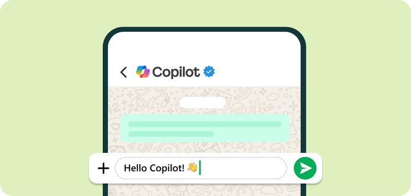

Copilot — це AI-помічник від Microsoft, який допомагає працювати з текстами,
даними, кодом і повсякденними завданнями.
Він тісно інтегрований з продуктами Microsoft та значно підвищує продуктивність.
Copilot допомагає писати, редагувати й узагальнювати тексти у Word, створювати презентації у PowerPoint, генерувати формули й аналізувати дані в Excel, а також готувати відповіді на листи в Outlook. Він працює у зв’язці з мовними моделями від OpenAI та використовує ваші дані у Microsoft 365 для персоналізованої допомоги.
Microsoft Copilot - це інтелектуальний AI-асистент, створений для допомоги користувачам у щоденній роботі, навчанні та бізнес-процесах.
допомога з текстами та ідеями
аналіз інформації
інтеграція з Windows та Office
автоматизація рутинних завдань

📝 Як почати користуватися?
Ви можете спробувати базову версію безкоштовно на сайті Microsoft Copilot,
увійшовши у свій обліковий запис.
Для повної інтеграції в програми Office потрібна передплата Microsoft 365 Copilot.
Де він працює?
🌐 У браузері: copilot.microsoft.com або бічна панель Edge
🪟 У Windows: керування налаштуваннями та запуск додатків
📄 В Office: Word, Excel, Teams, Outlook, PowerPoint
📱 На смартфонах: як мобільний додаток
Приклади промтів
📚 Навчання: «Поясни теорію відносності так, ніби мені 12 років»
💡 Креатив: «Запропонуй 10 ідей контенту для Instagram у ніші AI»
💻 Код: «Поясни, що робить цей JavaScript-код і як його покращити»
Автоматизація процесів з Microsoft Copilot
Автоматизація процесів за допомогою Microsoft Copilot дозволяє компаніям оптимізувати повсякденні завдання. Звіти та аналізи генеруються автоматично, що дає змогу співробітникам зосередитися на більш стратегічних діях.
Організації, що використовують Copilot для автоматизації процесів, застосовують цей інструмент у відділах фінансів, продажів, маркетингу та HR.
Автоматизація з Copilot також допомагає зменшити кількість помилок і прискорити ухвалення бізнес-рішень. Впровадження ШІ в бізнес — це не просто тренд, а реальна необхідність у сучасному діловому світі. Застосування ШІ сприяє автоматизації рутинних завдань, швидшому аналізу даних та ухваленню кращих рішень.
Microsoft Copilot як інструмент на базі ШІ підтримує організації в цих процесах, підвищуючи їхню ефективність та конкурентоспроможність.
🎯 Де Copilot допоможе саме тобі?
Клікни на іконку, щоб дізнатися, як Copilot полегшує роботу в різних сферах.
📊 Подивись, як Copilot економить час
Виберіть AI інструмент:
Цікаво знати:
🤖 AI здатен писати музику, яку можна слухати та виконувати живими музикантами.
🌌 Деякі AI-моделі створюють космічні пейзажі, які виглядають реалістично.
🧠 Деякі нейромережі навчилися грати в відеоігри краще за людей, інколи роблячи речі, які люди не передбачали.
.png) AI Tools Guide
AI Tools Guide